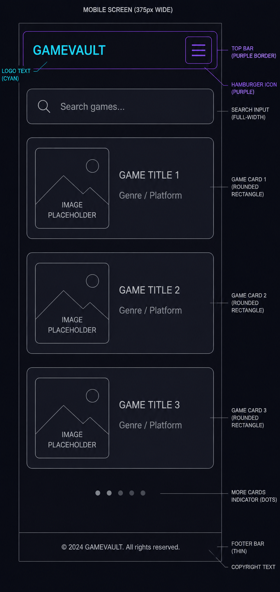
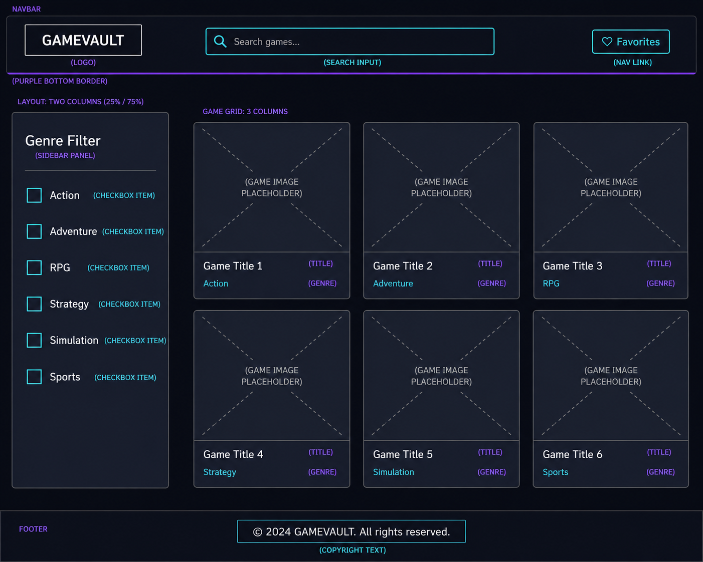

Site Name
GameVault: A vault stores things worth keeping. The name fits a game collection site and doesn't tie it to a specific genre or platform.
Site Purpose
GameVault lets users browse a catalog of video games across multiple genres. Each game card shows the title, genre, release year, and platform. Users can:
- Search and filter games by title in real time
- Click any card to see full game details
- Save games to a Favorites list (stored in localStorage)
- Come back later and find saved games on the Favorites page
It's for people who just want to track games they like, without needing Steam or a big gaming site to do it.
Scenarios
- "I want to find the best RPGs released after 2020. What does GameVault have listed, and how do I filter by genre?"
- "I saw a game I liked but I'm not ready to buy it. How do I save it so I can find it again next time I visit?"
Color Schema
Dark gaming palette. High contrast between backgrounds and accents.
#0f0f1a
Page Background
Page Background
#1a1a2e
Cards & Panels
Cards & Panels
#e0e0ff
Body Text
Body Text
#7c3aed
Headings & Active
Headings & Active
#22d3ee
Buttons & Links
Buttons & Links
Typography
- Orbitron for headings and the logo
- Inter for body text, labels, and buttons
Orbitron - GAMEVAULT HEADING SAMPLE
Inter - body text sample, easy to read at small sizes.
Wireframes
Home page layout for mobile and desktop views.
Mobile (< 768px)

Desktop (≥ 768px)
